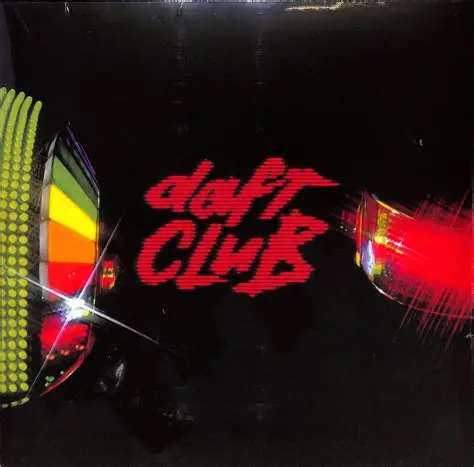

Daft Club
Daft Club est un album de remix de Daft Punk, sorti en 2003. Il est composé de remixes de leur second album, Discovery, à l'exception de la piste 5, le remix du morceau Phoenix de leur premier album Homework. Il est composé des titres provenant du Daft Club, qui était le site de téléchargement du groupe (notamment le morceau Ouverture), mais aussi de « faces B » de singles comme Aerodynamite provenant du single Aerodynamic. L'album est aussi disponible sur la version deluxe du DVD du film Interstella 5555: The 5tory of the 5ecret 5tar 5ystem.
Tracklist
| # | Titre | Durée |
|---|---|---|
| 1 | Ouverture | 2:40 |
| 2 | Aerodynamic (Daft Punk Remix) | 6:11 |
| 3 | Harder, Better, Faster, Stronger (The Neptunes Remix) | 5:11 |
| 4 | Face to Face (Cosmo Vitelli Remix) | 4:55 |
| 5 | Phoenix (Basement Jaxx Remix) | 7:53 |
| 6 | Digital Love (Boris Dlugosh Remix) | 7:30 |
| 7 | Harder, Better, Faster, Stronger (Jess & Crabbe Remix) | 6:01 |
| 8 | Face to Face (Demon Remix) | 6:59 |
| 9 | Crescendolls (Laidback Luke Remix) | 5:26 |
| 10 | Aerodynamic (Slum Village Remix) | 3:37 |
| 11 | Too Long (Gonzales Version) | 3:13 |
| 12 | Aerodynamite | 7:48 |
| 13 | One More Time (Romanthony's Unplugged) | 3:40 |
| 14 | Something About Us (Love Theme from Interstella 5555) | 2:51 |
Pour en savoir plus :Wikipedia

▶